Pierwsza pomoc. Apteczka na strzelnicę.
2025-10-18
Apteczka
Temat apteczki/ifaka przy pasie pojawia się dosyć często, postanowiłem więc nakreślić co warto mieć przy sobie na strzelnice, oraz szczyptę teorii.
Pamiętajcie jednak proszę, że profesjonalnego szkolenia nie zastąpi nic. Tekst ten jest też przede wszystkim dla ludzi z brakiem szkolenia z zakresu pierwszej pomocy, lub ze szkoleniem bardzo okrojonym – tych niskiej jakości niestety jest dosyć sporo, to co się dzieje czasami w różnych placówkach woła o pomstę. Rozeznajcie się więc proszę wcześniej do kogo jedziecie na szkolenie, podejdźcie do tego na spokojnie i wybierzcie najlepiej. Ludzie po szkoleniach z reguły wiedzą jak mają skompletować apteczkę i co jest priorytetem. Tutaj zakładam także, że zdarzenie ma miejsce na strzelnicy – w innych warunkach procedury działania są zgoła inne, jednak narzędzia poniżej wskazane zawsze będą uniwersalne.
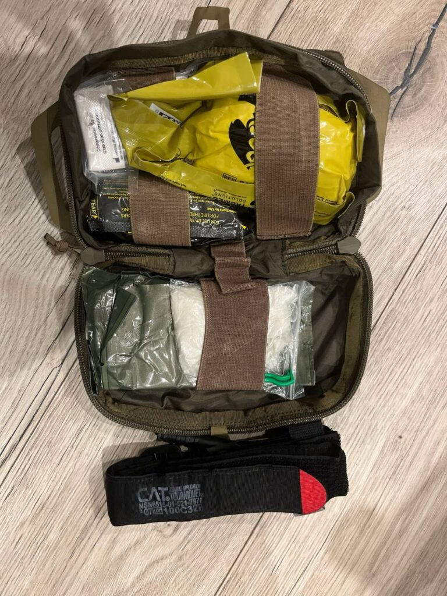
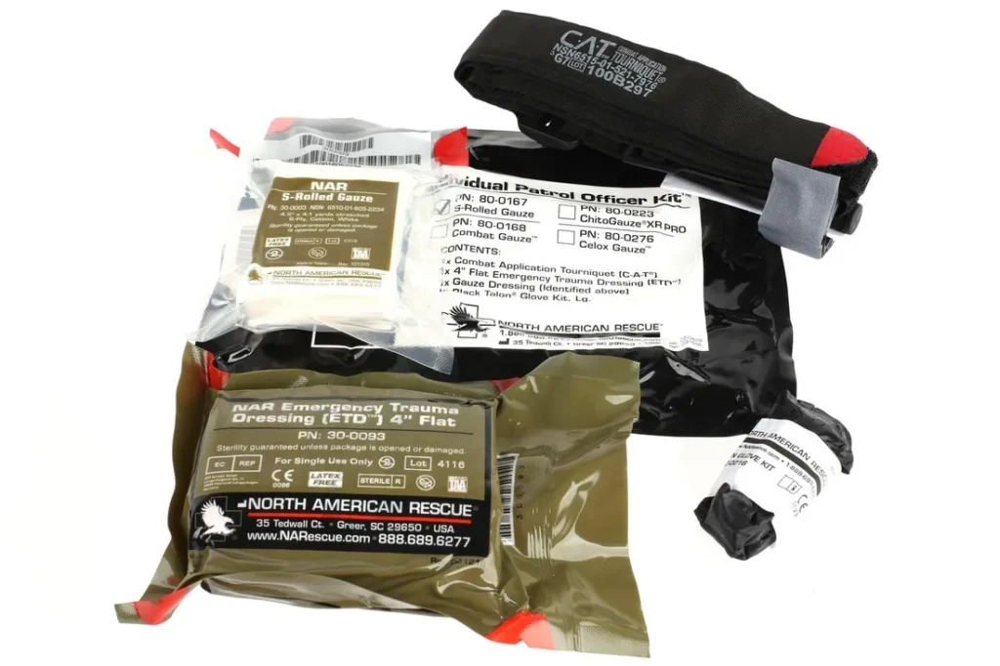
Strzelnica, oraz sam sport strzelecki, a także treningi są względnie bezpiecznym miejscem. Nie mniej, jeśli na strzelnicy zdarzy się jakiś wypadek – można z góry podejrzewać, że będzie dosyć brutalny. Warto więc się zabezpieczyć i wiedzieć co robić.
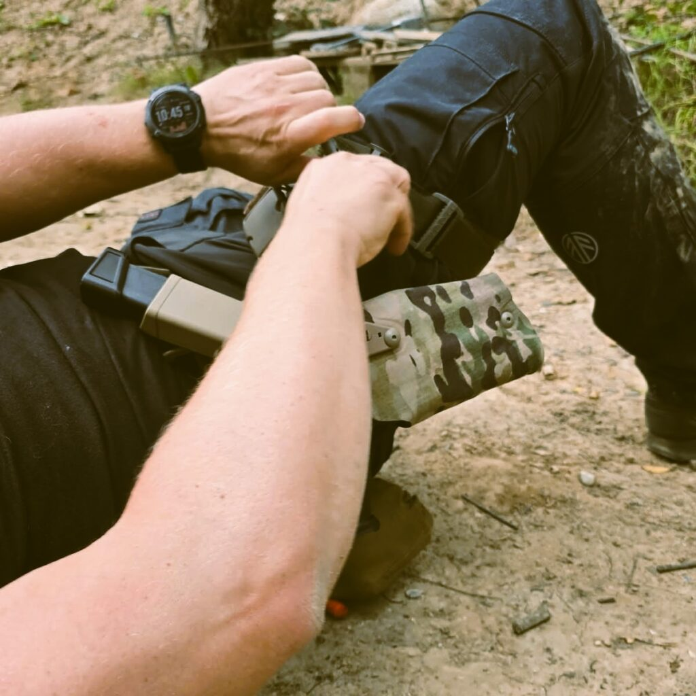
Jedną z pierwszych rzeczy, kiedy ktoś przychodzi na strzelnicę, powinno być zorientowanie się gdzie jest apteczka ogólnodostępna. Każda dobrze wyposażona strzelnica powinna mieć taką na widoku. Nie mniej – co jeśli okaże się, że otwierasz apteczkę a tam pustka, albo jesteś gdzieś przy kulochwycie, a apteczka jest po drugiej stronie strzelnicy na innej osi?
Ano ratujemy tym co mamy. I tu dochodzimy do tego co powinniśmy mieć obowiązkowo, a jest to po pierwsze STAZA. Ze względu na konstrukcję, ogólnodostępność, oraz jak łatwo ją użyć nawet będąc w panice, a także prostotę działania – CAT jest zdecydowanym faworytem. Po pierwsze, staza powinna być certyfikowana – chińskie podróbki lub inne produkty są obarczone ogromnym ryzykiem, i każdemu będę odradzał ich posiadanie/używanie. Znane i nie odosobnione są przypadki pękających krępulców, puszczających szwów taśmy, bądź kiedy krępulec taśmę przecina. Błagam – nie róbcie sobie tego, nie kupujcie badziewia. Kiedy czas leci, a z nim ucieka życie najgorsze co może się zdarzyć w takim scenariuszu to sytuacja, że zostajecie z krępulcem w ręku. Taka podróba jedyne do czego może się nadawać to ewentualnie trening, pod warunkiem, że będzie pomalowana na jakiś kolor, i zaraz później wywalona do śmieci (aby nie pomylić z pełnowartościowym, sprawdzonym produktem). Coś o czym wspomnę z obowiązku – nigdy nie trzymajcie na sobie stazy na trytrytkach/zip ties. Dostęp musi być szybki, prosty i skuteczny. Nie może być tak, że w jakikolwiek sposób musimy się szarpać o to, żeby ją odpiąć.
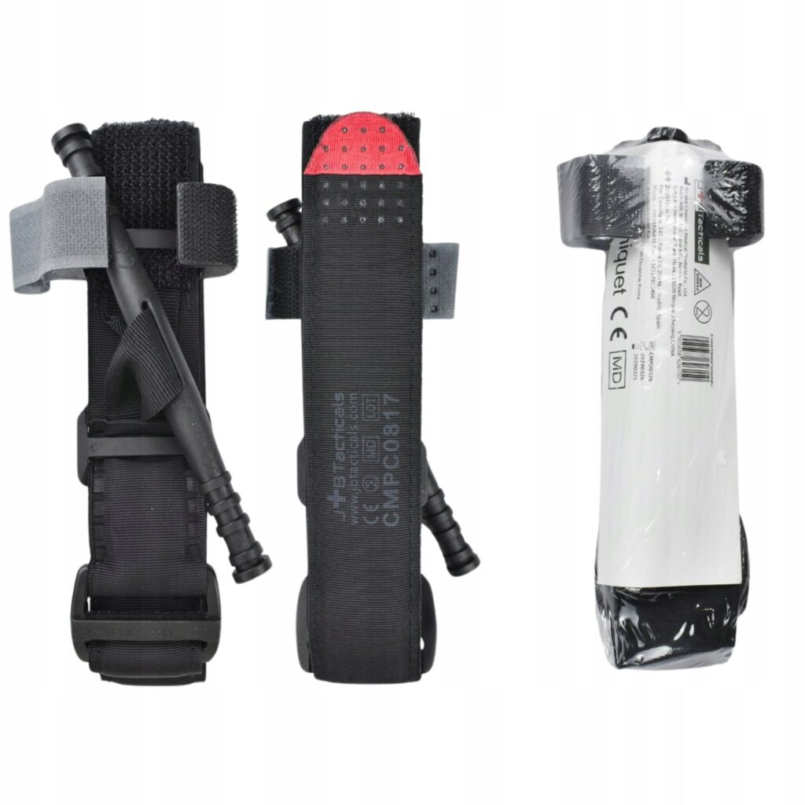
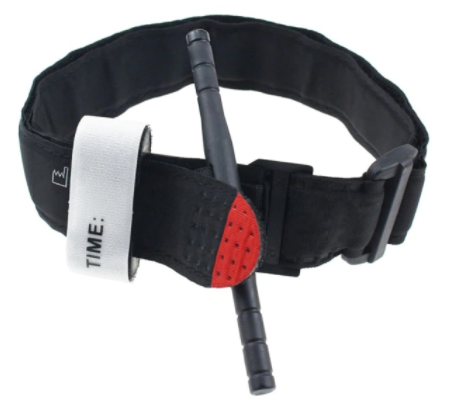
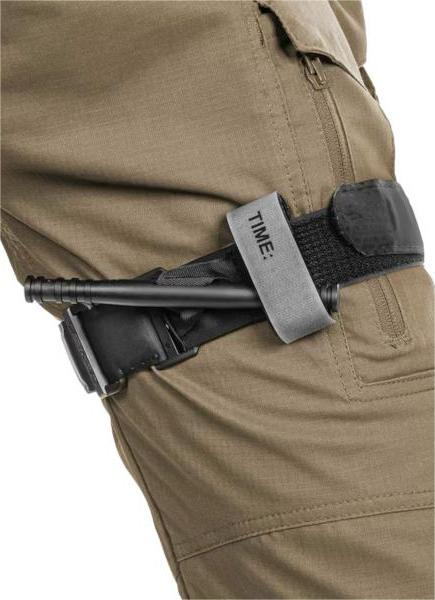
Dużo osób przyjmuje, że jedna wystarczy. W mojej ocenie jest to błąd, jeśli tylko mamy miejsce na jeszcze jedną sztukę – dorzućmy. Ważne jest jednak, żeby staza gdziekolwiek będzie umieszczona, była dostępna bez większych problemów silną oraz słabą ręką. Co jest nie mniej ważne – klar stazy. Staza musi być koniecznie rozpakowana z folii, oraz sklarowana: sprawdzone czy krępulec nie jest zabezpieczony przez taśmę do wypisania czasu założenia, czy dobrze jest poskładana sama taśma, czy przez to jak jest poskładana możemy swobodnie wsadzić rękę bądź też szybko rozrzepić i zaopatrzyć nogę. W najgorszym scenariuszu możemy przecież być sami na strzelnicy i samemu zrobić sobie krzywdę przez nieuwagę, wypadek bądź cokolwiek innego. Warto więc przećwiczyć tę procedurę na każdą kończynę osobno po kilka razy. W warunkach pokoju, spokojnie możemy założyć stazę od razu jak najwyżej. Ambulans w końcu raczej nie pojawi się dopiero po kilku godzinach, nie ma zatem ryzyka, że w skutek założenia stazy doszłoby do amputacji. A jeśli dalej ktoś się nad tym zastanawia – ratujcie życie, nie kończynę.
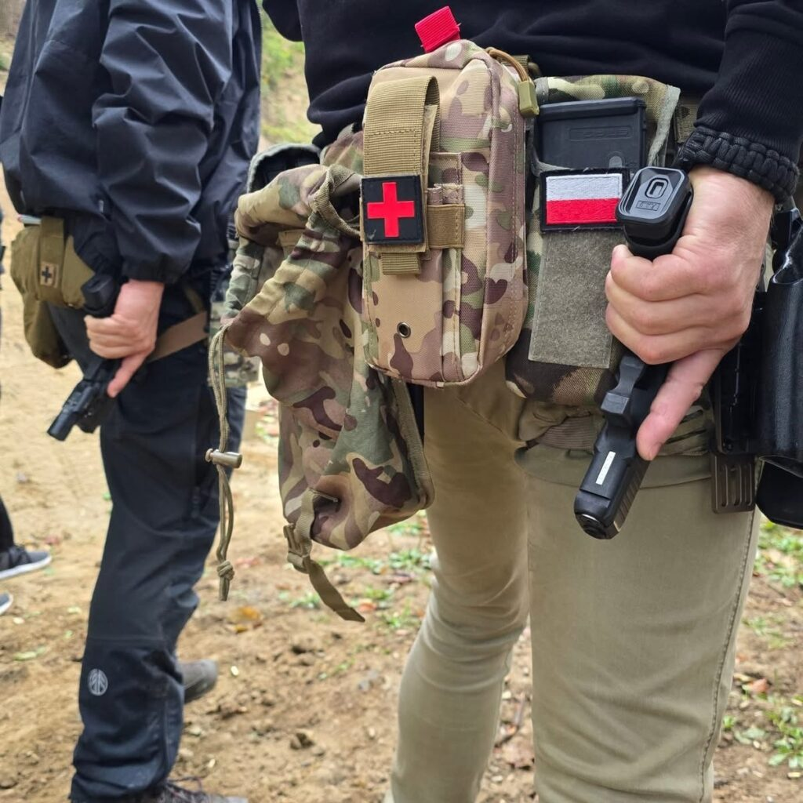
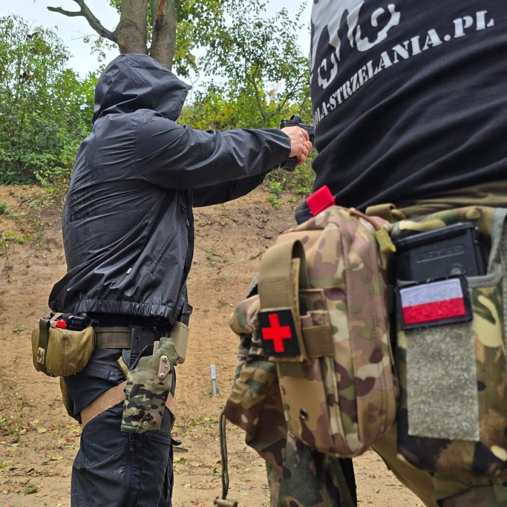
Są jednak miejsca, gdzie staza zwyczajnie nie pomoże i są to pachwiny, pachy, szyja, rejon klatki piersiowej, rany brzucha. Każde z tych miejsc wymaga odrobinę innego działania.
Weźmy pod lupkę choćby pachwiny – bardzo mocno ukrwione, dziura w tym rejonie spowoduje śmierć błyskawicznie.
Jednak tam staza nie pomoże, nie ma jej zwyczajnie gdzie założyć. Wtedy stosujemy technikę woundpackingu. Do tego będzie nam potrzebna gaza, bądź opatrunek hemostatyczny. Na to spokojnie można dać opatrunek uciskowy, oraz samemu uciskać ranę. Technikę woundpackingu zdecydowanie warto poćwiczyć pod okiem doświadczonego instruktora. Tych na szczęście trochę mamy, szkolą w różnych zakresach w różnych miejscach, gorąco zachęcam do choćby podstawowego szkolenia w tym zakresie.
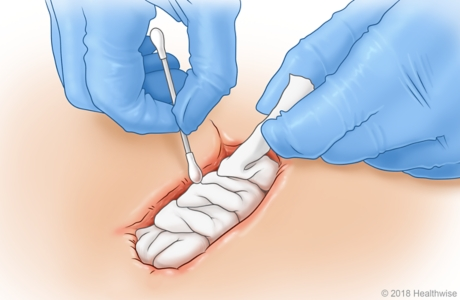
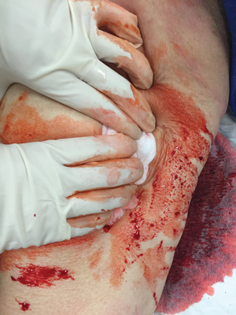
W skrócie jednak – chodzi o to, aby ranę zapchać środkiem hemostatycznym/gazą w taki sposób, żeby było to maksymalnie zaczopowane, a potem to przytrzymywać/nałożyć opatrunek uciskowy – pamiętajmy, że powstrzymujemy krwawienie, które potrafi być pod ogromnym ciśnieniem, więc nie będzie to lekkie głaskanie rany – raczej brutalne i mocne zapychanie. Nie ma jednak takiego bólu u pacjenta, którego ratownik nie wytrzyma ;). Bardzo ważne – woundpackingu nie stosujemy do jamy brzusznej – moglibyśmy go tam wrzucić dobre kilogramy, ale bez efektu. Znaczy efekt będzie – wypchany klient, ale raczej nie o to nam chodzi. Może się to wydawać niektórym nieco na wyrost, ale to też warto napisać – stazy nie stosujemy na szyi. Tak, co jakiś czas na różnych kursach ludzie wciąż próbują. Opatrunkiem hemostatycznym preferowanym będzie zwykłego typu opatrunek – do swojej apteczki mając wybór między zwykłym hemostatykiem a ampułkostrzykawkami, piankami, żelami – zawsze niech priorytetem będzie gaza ze środkiem hemostatycznym. Nie utrudniajmy sobie życia innymi rozwiązaniami (jest ich multum, każde ma swoje plusy i minusy), jeśli najbardziej uniwersalny opatrunek dosyć prosto użyć względem reszty.
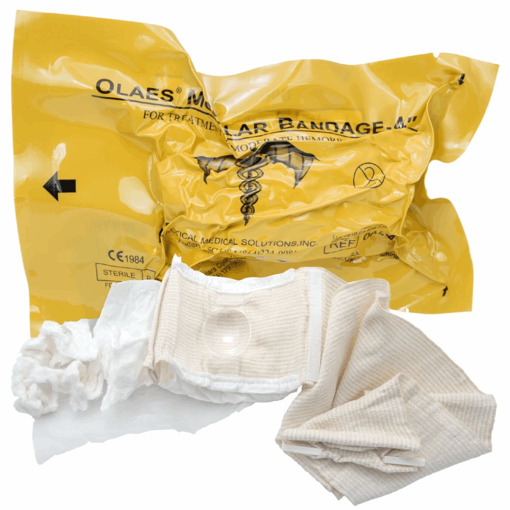
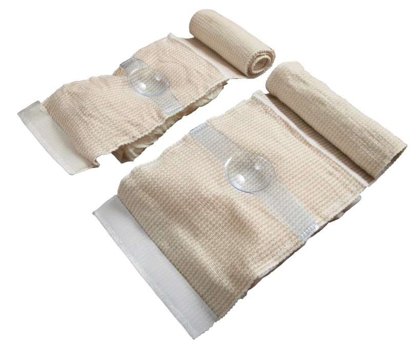
Odnośnie opatrunków uciskowych – jest dosyć sporo rozwiązań na rynku, sam preferuję Olaes, jednak to co się zdecydowanie nie nadaje do niczego to opatrunek indywidualny typu „A”. Zostawia nitki, posiada gazę bardzo słabej jakości. Każdy z nas ma ich pewnie kilka w jakiś apteczkach samochodowych, albo gdzieś poukrywanych kilka sztuk. Stanowczo odradzam, przy ratowaniu życia nie używajmy poślednich wyrobów medycznopodobnych.
Ostatnim o czym chciałbym wspomnieć są rany klatki piersiowej. Tutaj musimy czasami nieco bardziej poszukać i sprawdzić gdzie jest rana wlotowa oraz wylotowa (pocisk w ciele potrafi wędrować czasami w niewiarygodny sposób), i zastosować opatrunek wentylowy. W skutek postrzału w klatkę piersiową dojdzie do odmy – ta z kolei powstaje na skutek różnicy ciśnień wewnątrz płuca oraz na zewnątrz. W sytuacji jeśli nie zabezpieczymy rany może dojść – a właściwie dojdzie do nacisku płuca na serce. Aby wyrównać ciśnienie, warto zastosować opatrunek wentylowy.
Opatrunek taki ma z jednej strony mocny klej, posiada też swego rodzaju zawór, kanaliki bądź innego typu rozwiązanie działające jak powyższe. Efektem tego będzie, że powietrze może się już wydostać z rany tylko w jedną stronę – oddychanie nie będzie powodowało wypełniania opłucnej powietrzem co w konsekwencji powoduje zapadanie sie płuca. Gdyby doszło do zdarzenia – warto stosować to nijako z automatu – rozciąć koszulę, założyć opatrunek jak tylko widzimy ranę po uprzednim jej przetarciu, szukanie rany wylotowej i ponowne założenie drugie opatrunku.
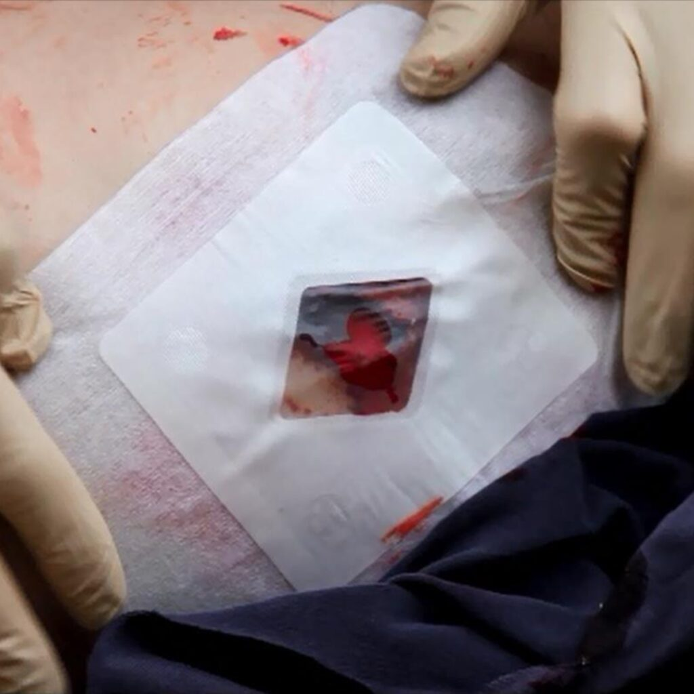
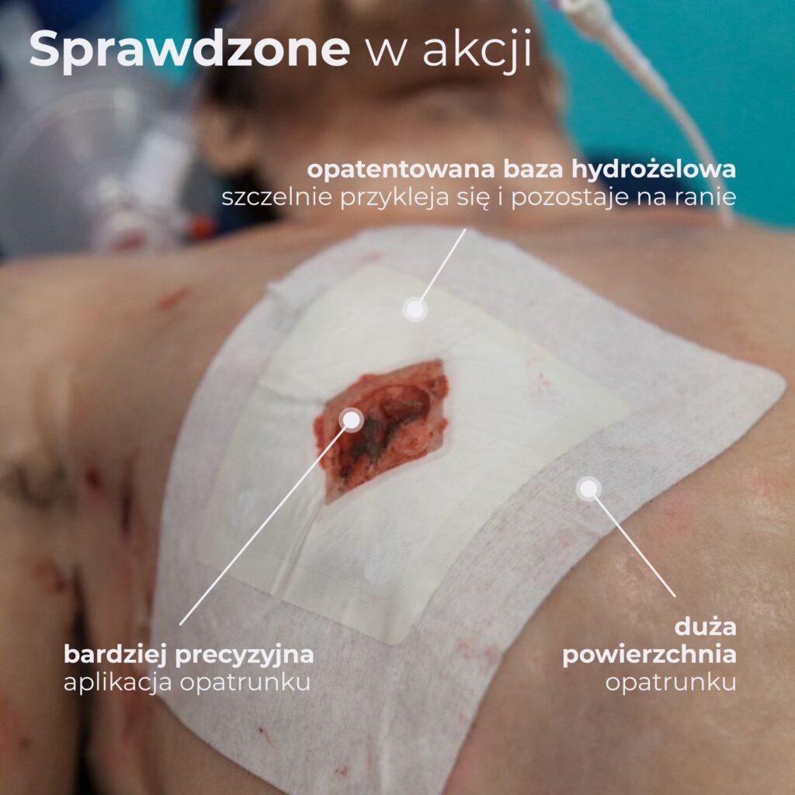
Oczywistym jest więc, że tych opatrunków powinniśmy mieć parę – na ranę wlotową oraz wylotową.
Pamiętajmy także, a może przede wszystkim o własnym bezpieczeństwie. Warto mieć w apteczce kilka par rękawiczek.
Wszystko powyższe nie jest jedynym co warto mieć, jednak jest w moim odczuciu absolutnym minimum, które trzeba przy sobie mieć. Bo nie ma co ukrywać, że oprócz tego warto mieć rzeczy nieco bardziej prozaiczne – jak choćby plastry na skaleczenia, koc ratunkowy i inne rzeczy. Drobnych skaleczeń na szczęście zdecydowanie jest więcej niż groźnych wypadków.
Życzę nam wszystkim aby tak pozostało.
red. Norek Krawczyk.
#ŁączyNasCel!